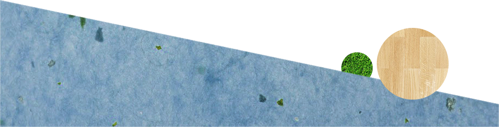

- 地產美女 -
楊芳綾從原本的幼教系統，轉踏入生硬的房地產工作，入行僅年餘的楊芳綾絲毫沒有格格不入，認真、肯學及勇於嘗試的態度，使她迅速融入團體當中，並且期待著第一戶成交能趕緊到來。
8年級、年僅24歲的楊芳綾，言談之中仍不時透露出青澀，少了點老成反而多了份真誠；大學時期便從事幼稚園助教工作的她，由於本身並非就讀相關科系，因此不具備幼教資格，所以畢業後選擇離開另覓出路，由於許多家族成員投身房地產行業，經過一番勸說與考量，決心踏入這個陌生的行業，從零開始
「從應付家長、小朋友到接待看屋客戶，同樣是面對人群，感受卻天差地遠。」楊芳綾說，比起幼稚園工作，房地產職場型態相對嚴肅，畢竟牽涉到幾百萬甚至上千萬的金額，或許解說方面可以輕鬆幽默，但心態上總是戰戰兢兢，特別對她這個入行不久的新人，如何讓藉由客戶的肯定來建立信心，在這個階段是最重要的一環。
第一次帶客看屋讓她印象深刻，使出渾身功夫將個案仔仔細細地介紹了一遍，但自認銷售話術沒有其他前輩老練，不過反倒贏得客戶的肯定和稱讚，可惜最終並沒有成交，「這個經驗讓我知道自己還有很多不足之處，出了社會沒有人會等妳，唯有多問、多學才能跟上團隊的腳步。」
然而，正值青春年華的楊芳綾，如何調整心態去面對房地產工時長的特性？她笑稱，房地產休假時間和一般上班族不同，沒有周休二日，國定假日也都要上班，朋友真的越來越少，所幸職場前輩像是一家人對工時長的缺點就沒那麼在意，現在只希望能成功賣出第一間房子，好讓自己的房地產生涯進入另一個里程碑。
